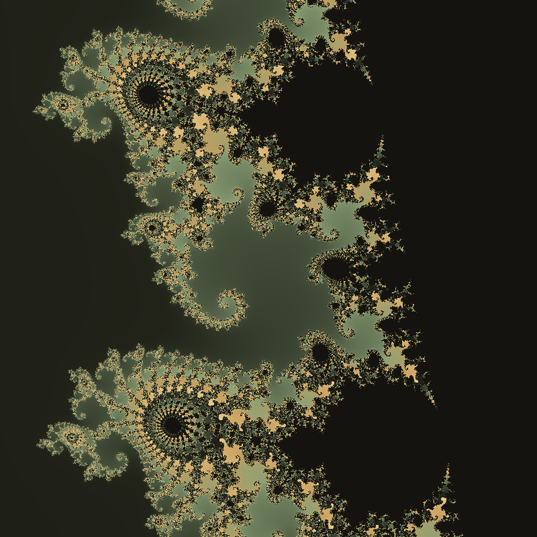
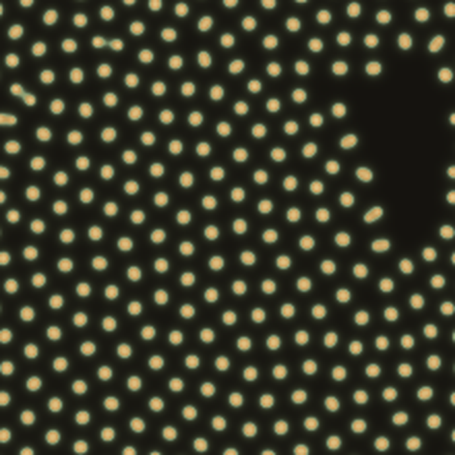
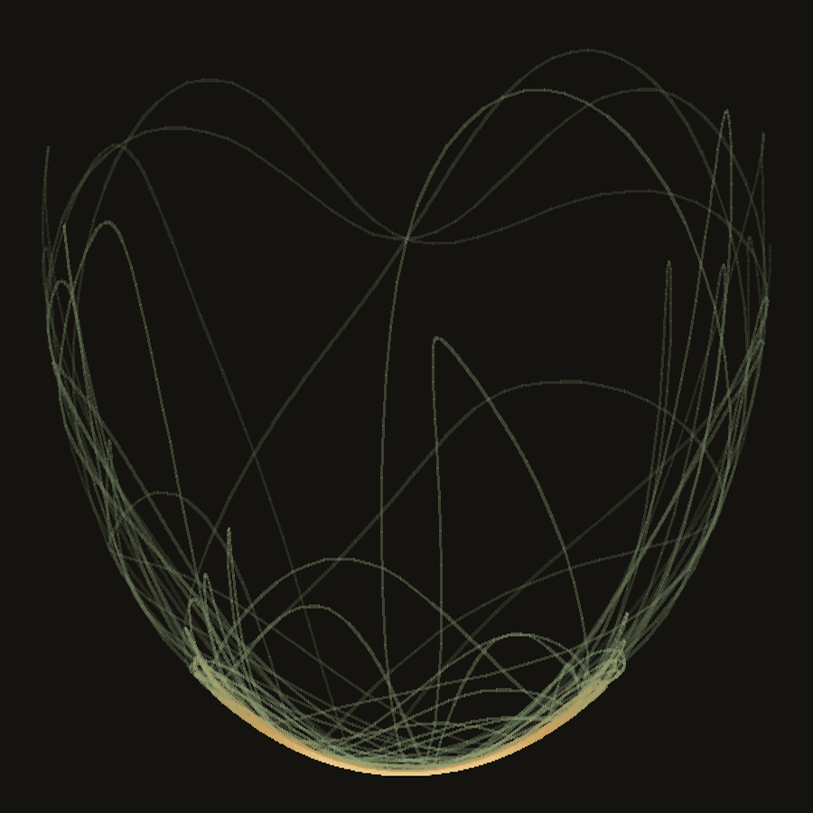
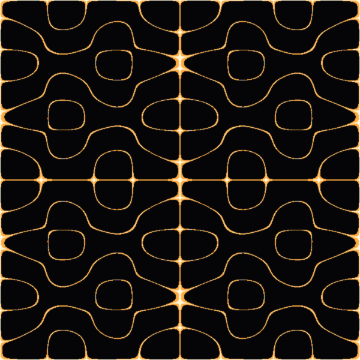
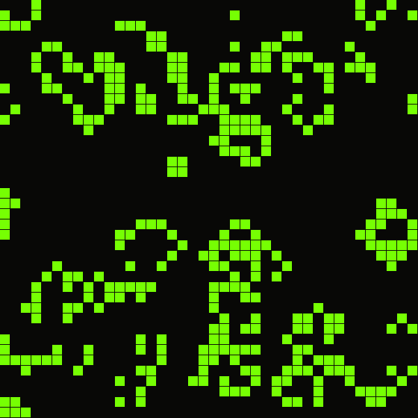

2026-08
マンデルブロ集合＆ジュリア集合エクスプローラー
Mandelbrot & Julia Set Explorer
マンデルブロ集合とジュリア集合を、ホイールとドラッグだけでどこまでも
掘り下げられるフラクタル・ビュワー。境界線に潜む渦は、拡大しても拡大しても
尽きることがない。ジュリア定数を動かせば、集合そのものの形が
まったく別の生き物に変わる。
An endlessly explorable fractal viewer for the Mandelbrot and Julia sets.
Zoom with the wheel, pan by dragging, and the spirals hiding in the
boundary never run out no matter how far you dive. Nudge the Julia
constant, and the set itself becomes an entirely different creature.
ブラウザで開く
Open in Browser

2026-08
チューリング・パターン（反応拡散系）
Turing Patterns (Reaction-Diffusion)
2種類の化学物質が拡散しながら反応するだけで、斑点やストライプ、渦巻きが
自然発生するGray-Scottモデルのシミュレーター。斑点・ストライプ・波紋螺旋の
3プリセットに加え、キャンバスをドラッグして化学物質を自由に注ぎ足せる。
チューリングが1952年に示した「なぜ豹には斑点があり、縞馬には縞があるのか」
という問いに、数式だけで答える。
A Gray-Scott reaction-diffusion simulator, where spots, stripes, and
spirals emerge on their own from just two diffusing chemicals reacting
with each other. Three presets — spots, stripes, spirals — plus drag
anywhere on the canvas to inject more chemical. A working answer, in
pure mathematics, to the question Turing posed in 1952: why do leopards
have spots and zebras have stripes?
ブラウザで開く
Open in Browser

2026-08
二重振り子（カオス運動シミュレーター）
Double Pendulum (Chaos Motion Simulator)
振り子を、もう一つの振り子につなぐだけ。それだけで軌道は完全に
予測不可能になる。先端が描く軌跡を色付きのラインで残しながら眺める、
カオス理論の入門的シミュレーター。重力と2本の腕の長さを自由に変えられ、
一時停止・軌跡クリア・初期位置リセットにも対応。
Just hang one pendulum from another, and the motion becomes completely
unpredictable. Watch the tip trace a colorful, ever-changing path — a
small, hands-on introduction to chaos theory. Adjust gravity and the
length of each arm freely, with pause, trail-clear, and reset controls.
ブラウザで開く
Open in Browser

2026-08
クラドニ図形（音の振動パターン）
Chladni Figures (Sound Vibration Patterns)
板を鳴らすと、砂は勝手に動かない場所へと集まっていく。周波数N・Mを
変えるだけで、花びら状から格子状まで模様が姿を変える砂のシミュレーター。
粒子密度も自由に調整でき、節に定着した砂ほど明るく浮かび上がる。
Ring a plate, and the sand drifts on its own toward the places that
don't move. A sand simulator where changing the frequencies N and M
reshapes the pattern from petal-like curves to rigid lattices.
Particle density is adjustable, and sand settled at the nodes glows
brighter than the sand still in motion.
ブラウザで開く
Open in Browser

2026-08
ライフゲーム（Conway's Game of Life）
Conway's Game of Life
生存・誕生・過疎・過密。たった4つの規則だけで、盤面は増殖し、
崩れ、時に安定した形へと落ち着く。グライダーやパルサー、グライダー銃と
いった古典パターンを選んで観察できるほか、盤面をクリックして
自分だけの初期配置を組むこともできる。
Survival, birth, underpopulation, overcrowding — just four rules,
and the board grows, collapses, and sometimes settles into stable
shapes. Choose classic patterns like the Glider, Pulsar, or Gosper
Glider Gun to watch, or click the grid to build a starting
configuration of your own.
ブラウザで開く
Open in Browser